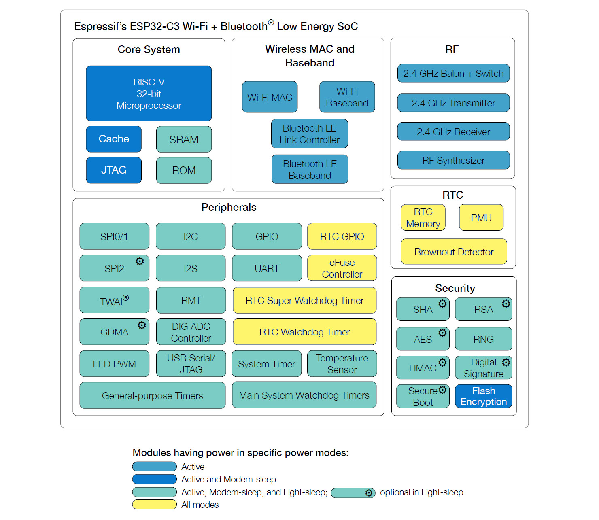
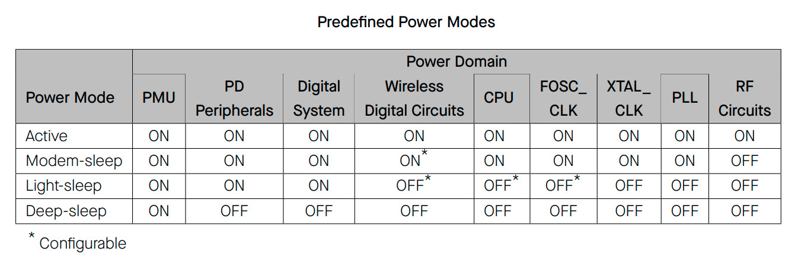
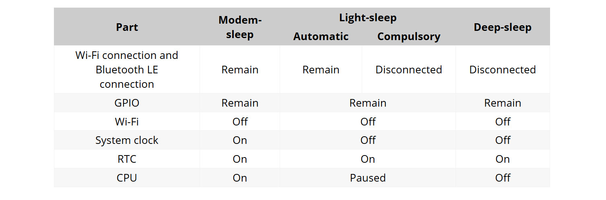
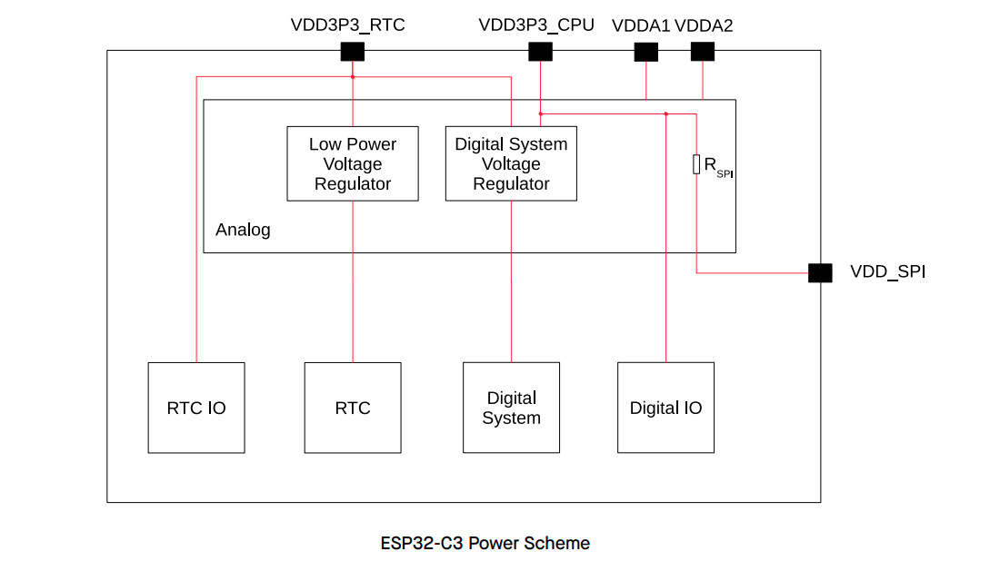
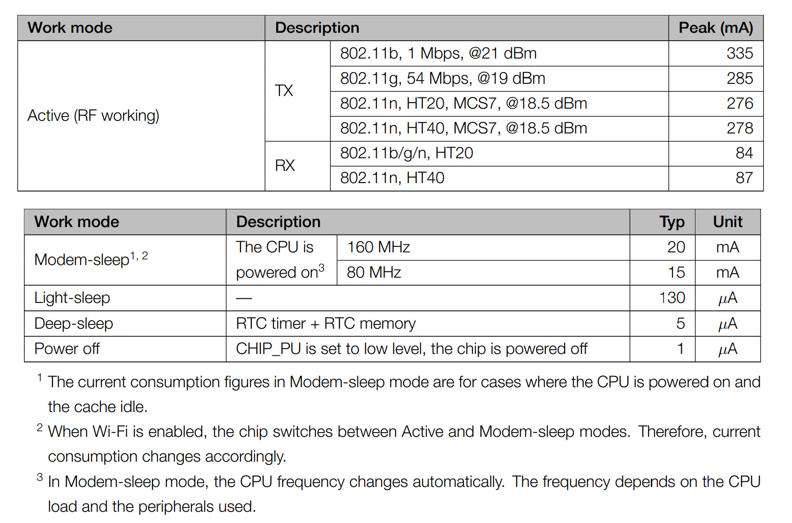

การทำงานของชิป ESP32-C3 ในโหมดประหยัดพลังงาน#
Keywords: ESP32-C3, Power Management, Low-Power Modes, Deep-Sleep, Light-Sleep
▷ โหมดการประหยัดพลังงานสำหรับ ESP32-C3#
การทำงานของ ESP32-C3 (32-bit, RISC-V-based MCU, 160MHz, 400KB of SRAM, 2.4GHz WiFi/BLE) สามารถแบ่งได้เป็น 4 โหมดหลัก:
- Active
- ทำงานในโหมดปรกติ: ซีพียู (CPU), Wi-Fi/BLE และวงจรต่าง ๆ ทำงานเต็มรูปแบบ
- Modem-Sleep
- ปิดการทำงานของวงจร RF Front-End สำหรับ Wi-Fi/BLE
- แต่การเชื่อมต่อสำหรับ WiFi/BLE ยังคงไว้ เช่น การเชื่อมต่อในโหมด Wi-Fi STA ไปยัง Wi-Fi Router/AP จะมีการปิดการทำงานของวงจร RF แต่จะเปิดใช้งานใหม่เป็นระยะ ๆ เพื่อจัดการกับ Wi-Fi Beacon จาก WiFi Router/AP
- มี 2 ระดับการประหยัดพลังงาน:
WIFI_PS_MIN_MODEMและWIFI_PS_MAX_MODEMโดยใช้กับคำสั่งesp_wifi_set_ps(...)
- Light-Sleep
- มีสองรูปแบบคือ Manual Light-Sleep และ Automatic Ligh-Sleep
- ปิดการทำงานของซีพียู วงจรแอนะล็อก (เช่น
RC_FAST_CLK,XTAL_CLK,PLL) - ปิดการทำงานของวงจร Wi-Fi/BLE ทั้งหมด (สำหรับ Manual Light-Sleep)
- วงจรดิจิทัลบางส่วนยังทำงานอยู่ (บางวงจรสามารถเลือกได้ว่าจะให้ ON / OFF)
- ข้อมูลใน RAM ยังคงอยู่
- รองรับการปลุกด้วย Timer, GPIO หรือวงจร Peripheral บางตัว
- Wakeup Sources:
- GPIO Wakeup
- RTC Timer Wakeup
- UART Wakeup
- Wi-Fi Wakeup
- ใช้คำสั่งเลือกใช้งาน Wakeup Sources เช่น
esp_sleep_enable_timer_wakeup(...)gpio_wakeup_enable(...),esp_sleep_enable_gpio_wakeup()
esp_light_sleep_start()เป็นคำสั่งเพื่อทำให้ชิปเข้าสู่โหมด Light-Sleep แต่จะรอจนกว่าการทำงานของซีพียูจะเข้าสู่สภาวะ CPU Idle ก่อน- ถ้าไม่มีช่วงเวลาที่เป็น CPU Idle หรือเกิดอินเทอร์รัพท์ (Interrupt) ต่อเนื่องมาก อาจไม่สามารถเข้า Light-Sleep ได้
- Deep-Sleep
- ปิดการทำงานของซีพียู RAM และวงจรส่วนใหญ่ (แบ่งกลุ่มตาม Power Domains)
- เปิดใช้งานเฉพาะวงจรในกลุ่ม RTC เช่น RTC Timer, RTC fast memory (8KB SRAM), RTC GPIO (GPIO0-5) และวงจรของ PMU (Power Management Unit) เช่น Sleep / Wakeup Controllers, Low-power Clocks และ Low-Power Voltage Regulators
- ใช้พลังงานน้อยที่สุด แต่มีระยะเวลาในการตื่นและเริ่มต้นทำงานใหม่นานกว่าโหมด Light-sleep
- สามารถปลุกจาก Deep-sleep ด้วย RTC Timer (ใช้กำหนดระยะเวลาพัก) หรือปลุกตามเงื่อนไขของ RTC GPIO Pin
- Wakeup Sources
- GPIO Wakeup (RTC IO)
- RTC Timer Wakeup
- ใช้คำสั่งเลือกใช้งาน Wakeup Sources เช่น
esp_deep_sleep_enable_gpio_wakeup(...)esp_sleep_enable_timer_wakeup(...)
esp_deep_sleep_start()เป็นคำสั่งเพื่อทำให้ชิปเข้าสู่โหมด Deep-Sleep

รูป: ESP32-C3 Block Diagram
การทำงานในโหมด Automatic Light-sleep Mode
- ESP-IDF มีอีกโหมดที่เรียกว่า Automatic Light-sleep Mode เป็นโหมดประหยัดพลังงานที่ ESP-IDF จะจัดการให้ CPU เข้าสู่ Modem-Sleep และ Light-sleep ตามลำดับโดยอัตโนมัติ ในช่วงที่ไม่มีงานต้องทำ (CPU Idle)
- ระบบ FreeRTOS จะต้องทำงานในโหมด Tickless Idle (จะไม่มีการตื่นตาม RTOS Tick เช่น ทุก ๆ 1ms) เพื่อให้ Automatic Light-Sleep สามารถทำงานได้จริง
- ใน ESP-IDF Menuconfig จะต้องมีการตั้งค่าในหัวข้อ Power Management (
CONFIG_PM_ENABLE) - การทำงานบางช่วงของโปรแกรม สามารถปิดการเข้าสู่ Automatic Light-sleep ชั่วคราวได้
โดยใช้วิธีที่เรียกว่า Power Management Lock และใช้คำสั่ง
esp_pm_lock_acquire(...)และesp_pm_lock_release(...)
การลดการใช้พลังงานของ ESP32-C3 ยังมีอีกวิธีหนึ่งคือ การปรับลดความเร็วของสัญญาณ Clock (เรียกวิธีนี้ว่า Dynamic Frequency Scaling) เช่น การปรับลดความถี่ของวงจรที่เชื่อมต่อกับบัส APB (Advanced Peripheral Bus) และการปรับเลือกความถี่สำหรับซีพียู เช่น 160MHz และ 80MHz เป็นต้น


รูป: โหมดการทำงานและการประหยัดพลังงานของ ESP32-C3

รูป: การแบ่งกลุ่มวงจรภายในเพื่อการจัดการพลังงาน (Power Domains) ของ ESP32-C3
จากเอกสาร ESP32-C3 Datasheet มีข้อมูลเกี่ยวกับปริมาณการใช้กระแสไฟฟ้าในโหมดต่าง ๆ ดังนี้
- Modem-sleep: (CPU Clock 160MHz)
- CPU running: 23mA ~ 28mA
- CPU idle: 16mA ~ 21mA
- Light-sleep: 130µA (typ)
- Deep-sleep mode: 5 µA (typ)

รูป: ตารางข้อมูลการใช้กระแสสำหรับ ESP32-C3 จากเอกสาร Datasheet
ถ้าให้แรงดันไฟเลี้ยงคงที่ เช่น +3.3V และนำไปคูณกับปริมาณกระแสโดยเฉลี่ย ก็จะได้กำลังไฟฟ้าของชิป ESP32-C3 แต่ละโหมด ซึ่งมีการใช้ปริมาณกระแส (กำลังไฟฟ้า) แตกต่างกัน
การวัดและวิเคราะห์การใช้กระแสไฟฟ้าที่มีการเปลี่ยนแปลงอย่างรวดเร็วในเชิงเวลา และอาจอยู่ในระดับที่ต่ำ (nA, uA, mA) โดยทั่วไปจะใช้เครื่องมือวัดโดยเฉพาะ (DC Power Analyzer Tools) ถ้าเป็นอุปกรณ์ที่มีความแม่นยำและประสิทธิภาพสูง ก็มักมีราคาสูง เช่น
แต่ถ้าไม่ต้องการความแม่นยำสูง ก็อาจใช้วิธีอื่น เช่น การใช้โมดูลที่มีไอซีประเภท Current-Sense Amplifier ซึ่งทำหน้าที่แปลงกระแสที่ไหลผ่านตัวต้านทาน Shunt Resistor (ที่มีความต้านทานต่ำ เช่น 0.1Ω) ให้เป็นแรงดันเอาต์พุตโดยมีการขยายสัญญาณด้วย เพื่อนำไปตรวจสอบรูปคลื่นสัญญาณโดยใช้ออสซิลสโคป
▷ ตัวช่วยประมวลผลแบบประหยัดพลังงานภายในชิป Espressif SoC#
ชิป Espressif SoCs มีหลายรุ่น ภายในมีซีพียูแบบหนึ่งแกนหรือสองแกน (Single-Core & Dual-Core) อาจแตกต่างกันไป เช่น Xtensa LX6 / LX7 หรือ RISC-V 32-bit (RV32IMC) เป็นต้น นอกเหนือจากตัวประมวลผลดังกล่าว ยังมีตัวช่วยประมวลผลแบบประหยัดพลังงาน เรียกว่า Ultra Low Power (ULP) Coprocessors และมีการใช้งานดังนี้
-
ULP-FSM (Finite State Machine) Coprocessor:
- มีอยู่ในชิป ESP32, ESP32-S2, ESP32-S3
- เขียนโปรแกรมโดยผู้ใช้ได้ แต่ภาษาเป็นแบบ Assembly
- มีรูปแบบการทำงานเหมือน Finite-State Machine (FSM) แต่มีชุดคำสั่งและจำนวนรีจิสเตอร์ค่อนข้างจำกัด
- สามารถเขียนโปรแกรมให้อ่านข้อมูลจากวงจร ADC หรือใช้งานขา GPIO ได้
- ULP Instruction Set Reference (ESP32)
-
ULP-RISC-V:
- มีอยู่ในชิป ESP32-S2 และ ESP32-S3
- ใช้หน่วยประมวลผลแบบ RISC-V 32 บิต (
RV32IMC) - รองรับการคูณและหารด้วยฮาร์ดแวร์ และมีรูปแบบคำสั่งแบบย่อ (Compressed Instructions)
- ความถี่การทำงานอยู่ที่ 17.5 MHz (
RTC_FAST_CLK) - เขียนโปรแกรมโดยผู้ใช้ได้และใช้ภาษา C และ Assembly ได้
โดยใช้ซอฟต์แวร์ Espressif ESP-IDF ใช้เครื่องมือมาตรฐานของ GNU
เช่น
riscv-none-embed-gcc - ทำงานได้เมื่อชิปอยู่ในโหมด Deep Sleep และ Light Sleep และสามารถให้ปลุกการทำงานของซีพียูหลักได้
- รองรับการเข้าถึงหน่วยความจำ
RTC_SLOW_MEMรีจิสเตอร์ของRTC_CNTL,RTC_IOและSAR-ADC - เมื่อระบบเริ่มทำงาน โปรแกรม
ULPจะถูกคัดลอกจาก Flash ไปยัง RTC SLOW Memory (ใช้เก็บทั้งโค้ดและข้อมูลของโปรแกรม ULP) แล้วจึงเริ่มทำงาน - สำหรับ ESP32-S3 มี RTC Memory ขนาด 8KB (FAST) + 8KB (SLOW)
-
ULP Low-Power Core (LP-Core):
- พัฒนาต่อยอดจาก ULP-RISC-V แต่มีการเพิ่มฟังก์ชันการทำงาน
- มีอยู่ในชิป ESP32-C6
ประโยชน์หลักของ ULP Coprocessor คือ การทำหน้าที่ในช่วงที่ชิปเข้าสู่โหมดประหยัดพลังงาน ซีพียูหลักและวงจรส่วนใหญ่ภายในชิปหยุดการทำงานชั่วคราวหรือปิดการใช้งาน
แต่ชิป ESP32-C2, ESP32-C3, ESP32-C5 และ ESP32-H2 ไม่มีตัวช่วยประมวลผลใด ๆ (ไม่มี ULP-FSM, ULP-RISC-V, ULP LP-Core) ดังนั้นจึงใช้วงจร RTC / PMU (Power Management Unit) เป็นตัวจัดการทำงานของชิป ในโหมด Light / Deep Sleep
ESP32C3 Documentation
- ESP32-C3 Technincal Reference Manual
- ESP32-C3 API: Sleep Modes
- ESP32-C3 Wireless Adventure: A Comprehensive Guide to IoT (2023)
▷ การเปรียบเทียบระหว่างโหมด Light Sleep และ Deep Sleep สำหรับ ESP32-C3#
Light Sleep:
- เป็นโหมดประหยัดพลังงานที่ยังคงรักษาสถานะของระบบไว้เกือบทั้งหมด เช่น RAM ตัวแปรต่าง ๆ และการทำงานของวงจรภายในบางส่วน
- หลังจากตื่นขึ้นมา จะกลับมาทำงานต่อจากจุดเดิม ถัดจากตำแหน่งที่ทำคำสั่ง
esp_light_sleep_start() - ข้อมูลในตัวแปรที่อยู่ใน RAM จะยังคงอยู่ครบ (ไม่ต้องประกาศใช้
RTC_DATA_ATTRสำหรับตัวแปร) - สามารถตั้งเวลาปลุกด้วยคำสั่ง
esp_sleep_enable_timer_wakeup(...)หรือปลุกด้วยสัญญาณจากขา GPIO หรือเมื่อมีการรับข้อมูลจาก UART หรือปลุกโดย Wi-Fi (WiFi Wakeup Event) - เวลาปลุกและตื่นขึ้นทำงาน จะใช้เวลาไม่กี่ไมโครวินาที
- เหมาะสำหรับงานที่ต้องการปลุกบ่อย หรือประหยัดพลังงานแต่ยังต้องทำงานแบบทันที
Deep Sleep:
- เป็นโหมดประหยัดพลังงานสูงสุด โดยจะปิดเกือบทุกอย่าง ยกเว้นวงจร RTC
- เมื่อตื่นขึ้นมา จะเริ่มโปรแกรมใหม่ทั้งหมด ดังนั้นในโค้ด Arduino Sketch จึงมีการทำคำสั่ง
setup()เหมือนรีเซตบอร์ด - ข้อมูลใน RAM ทั้งหมดจะถูกเคลียร์ ถ้าต้องการเก็บข้อมูลให้คงอยู่หลังการตื่นอีกครั้ง
จะต้องประกาศใช้ตัวแปรแบบ
RTC_DATA_ATTRหรือจัดเก็บไว้ใน Flash - ปลุกได้ด้วย RTC Timer หรือจากสัญญาณ
LOWที่ RTC GPIO (เฉพาะ GPIO 0–5 เท่านั้น สำหรับ ESP32-C3) - เหมาะกับการทำงานเป็นช่วง ๆ แต่ไม่บ่อย
- เวลาตื่นนานกว่า Light Sleep เนื่องจากต้องบูตระบบใหม่
▷ ตัวอย่างโค้ดสาธิตการใช้ Deep-Sleep สำหรับ Arduino Sketch#
ถัดไปเป็นตัวอย่างโค้ดสำหรับ ESP32-C3 ที่แสดงการเข้าสู่โหมด Deep Sleep
โดยตั้งให้ตื่นขึ้นมาโดยอัตโนมัติหลังจากผ่านไป 100 มิลลิวินาที (100,000 ไมโครวินาที)
ใช้คำสั่ง esp_sleep_enable_timer_wakeup() ซึ่งเป็นการกำหนดให้ RTC Timer เป็นตัวปลุกการตื่น
ก่อนเข้าสู่ Deep Sleep ตัวโปรแกรมนี้ จะส่งพัลส์ออกทางขา GPIO-10 โดยสลับสถานะ
HIGH → LOW → HIGH เว้นช่วงเวลาสั้น ๆ 10 msec เพื่อใช้ในการสังเกตสัญญาณทางฮาร์ดแวร์
เช่น ออสซิลโลสโคป หรือ Logic Analyzer ว่ามีการเริ่มทำงานก่อนเข้าสู่ Sleep จริงหรือไม่
ส่วน loop() ว่างเปล่า เนื่องจากโค้ดนี้ทำงานเพียงครั้งเดียวใน setup() แล้วเข้าสู่ Deep Sleep ทันที
// Example: esp32c3_deepsleep_timer_wakeup.ino
#define PULSE_GPIO 10 // GPIO-10
void setup() {
pinMode( PULSE_GPIO, OUTPUT );
// Toggle the GPIO pin to generate a pulse.
digitalWrite(PULSE_GPIO, 1);
delay(10);
digitalWrite(PULSE_GPIO, 0);
delay(10);
digitalWrite(PULSE_GPIO, 1);
// Configure the RTC timer to trigger a wakeup event
esp_sleep_enable_timer_wakeup(100000); // 100ms = 100000µs
// Enter deep sleep
esp_deep_sleep_start();
}
void loop() {
// empty
}
การเขียนโค้ด Arduino Sketch เพื่อให้ทำงานในโหมด Deep-Sleep สามารถทำได้ง่าย โดยใช้คำสั่งต่อไปนี้
esp_sleep_enable_timer_wakeup( uint64_t time_in_us )เปิดใช้งานการวงจรปลุกจาก Sleep Mode โดยใช้วงจร RTC Timer โดยระบุระยะเวลามีหน่วยเป็นไมโครวินาที เช่น 100,000 ไมโครวินาทีesp_deep_sleep_start()ทำให้ซีพียูเข้าสู่โหมด Deep-Sleep
หากทดลองกับฮาร์ดแวร์จริง ก็สามารถใช้ออสซิลโลสโคปตรวจวัดสัญญาณเอาต์พุตที่ขา GPIO-10 เพื่อดูสัญญาณ Pulse ที่เกิดขึ้นได้
▷ ตัวอย่างโค้ดสาธิตการใช้ Deep-Sleep และใช้ซอฟต์แวร์ ESP-IDF#
หากจะลองโค้ดตัวอย่างภาษา C ที่ใช้กับ ESP-IDF ก็มีตัวอย่างดังนี้
File: main/esp32c3-deepsleep-demo.c
#include "freertos/FreeRTOS.h"
#include "freertos/task.h"
#include "driver/gpio.h"
#include "esp_sleep.h"
#include "esp_log.h"
#include "esp_system.h"
#define PULSE_GPIO 10 // GPIO-10
void app_main(void)
{
// Log wakeup reason
esp_sleep_wakeup_cause_t reason = esp_sleep_get_wakeup_cause();
if (reason != ESP_SLEEP_WAKEUP_UNDEFINED) {
ESP_LOGI("WAKE", "Wakeup from deep sleep (reason: %d)", reason);
} else {
ESP_LOGI("WAKE", "Cold boot (power-on or reset)");
}
// Configure GPIO for pulse output
gpio_config_t io_conf = {
.pin_bit_mask = (1ULL << PULSE_GPIO),
.mode = GPIO_MODE_OUTPUT,
.pull_up_en = GPIO_PULLUP_DISABLE,
.pull_down_en = GPIO_PULLDOWN_DISABLE,
.intr_type = GPIO_INTR_DISABLE
};
gpio_config( &io_conf );
// Generate pulse: High -> Low -> High with 10 ms delay
gpio_set_level( PULSE_GPIO, 1 );
vTaskDelay( pdMS_TO_TICKS(10) );
gpio_set_level( PULSE_GPIO, 0 );
vTaskDelay( pdMS_TO_TICKS(10) );
gpio_set_level( PULSE_GPIO, 1 );
// Set RTC wakeup timer: 100ms = 100000µs
esp_sleep_enable_timer_wakeup( 100000 );
ESP_LOGI("SLEEP", "Entering deep sleep for 100 ms");
esp_deep_sleep_start();
// Execution will not reach here.
}
การสร้างโปรเจกต์สำหรับ ESP-IDF (เช่น ESP32-C3) มีขั้นตอนพื้นฐานดังนี้
- ผู้ใช้จะต้องดาวน์โหลดและติดตั้ง ESP-IDF (Espressif IoT Development Framework) ให้พร้อมใช้งานก่อน
- ตรวจสอบเวอร์ชันของ ESP-IDF (เช่น ใช้เวอร์ชัน v5.5):
idf.py --version - สร้างโปรเจกต์ใหม่และไดเรกทอรีสำหรับโปรเจกต์ โดยใช้คำสั่ง
idf.py create-project - เข้าไปยังไดเรกทอรีของโปรเจกต์ ตั้งค่าเป้าหมายเป็น
esp32c3:idf.py set-target esp32c3 - ตั้งค่าคอนฟิกของโปรเจกต์ (ถ้าต้องการ):
idf.py menuconfig - คอมไพล์โค้ดของโปรเจกต์:
idf.py build - แฟลชโปรแกรมไปยังบอร์ด ESP32-C3:
idf.py -p /dev/ttyACM0 flash
ขั้นตอนการติดตั้ง ESP-IDF (master branch)
$ cd $HOME
$ git clone --recursive https://github.com/espressif/esp-idf.git
$ cd esp-idf
$ ./install.sh esp32c3
$ . ./export.sh
$ idf.py --version
ขั้นตอนการสร้างโปรเจกต์ คอมไพล์โค้ด และอัปโหลดลงบอร์ดทดลอง
$ idf.py create-project esp32c3-deepsleep-demo
$ cd esp32c3-deepsleep-demo
$ idf.py set-target esp32c3
$ idf.py menuconfig
$ idf.py build
$ idf.py -p /dev/ttyACM0 flash
โครงสร้างไดเรกทอรีและไฟล์ภายในของโปรเจกต์
~/esp/projects/esp32c3-deepsleep-demo$ tree -L 1
.
├── build
├── CMakeLists.txt
├── main
├── sdkconfig
└── sdkconfig.old
3 directories, 3 files
▷ กล่าวสรุป#
บทความนี้อธิบายโหมดการทำงานที่ประหยัดพลังงานของ ESP32-C3 โดยแต่ละโหมดมีลักษณะการทำงานและระดับการประหยัดพลังงานที่แตกต่างกัน ขึ้นอยู่กับการปิดการใช้งานวงจรภายในส่วนใดบ้าง มีการเปรียบเทียบความแตกต่างระหว่าง Light-Sleep Deep-Sleep และมีตัวอย่างโค้ดสำหรับ Arduino และ ESP-IDF สาธิตการทำงานในโหมด Deep-Sleep
แนวทางในการศึกษาและทดลองปฏิบัติเพิ่มเติม ได้แก่ การวัดปริมาณกระแสไฟฟ้าเปรียบเทียบโหมดการทำงาน และช่วงเวลาในการตื่นขึ้นมาทำงานต่อ อาจจะใช้โมดูล Current-Sense Amplifier / Current Shunt Monitor เช่น MAX4080S เป็นต้น
- "การเขียนโปรแกรม ESP32-C3 ด้วย Arduino ทำงานในโหมด Sleep / Wakeup และวิเคราะห์การใช้พลังงาน"
- "แนะนำการใช้งานโมดูล MAX4080 Current Sensor"
- "การทดลองวัดกระแสโดยใช้โมดูล Current Sense Amplifier - MAX4080S"
This work is licensed under a Creative Commons Attribution-ShareAlike 4.0 International License.
Created: 2025-05-15 | Last Updated: 2025-05-17